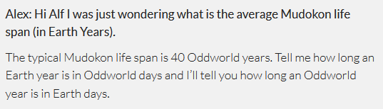

To give you a rough idea:

Style 1
(Dear Alf 1-38)
Archived on MoM. The style is consistent and easily parseable.

Style 2
(Dear Alf 2011. March-45 + Dear Alf 47-48 + Dear Alf 77)
On OWI's website, still this is fine and parseable.

Style 3
(Dear Alf 49-76)
Again on OWI's website, the style has underwent major changes, but sure, it's doable.

Style 4
(Dear Alf 46)
WTF!